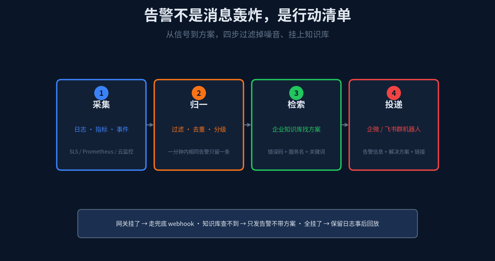
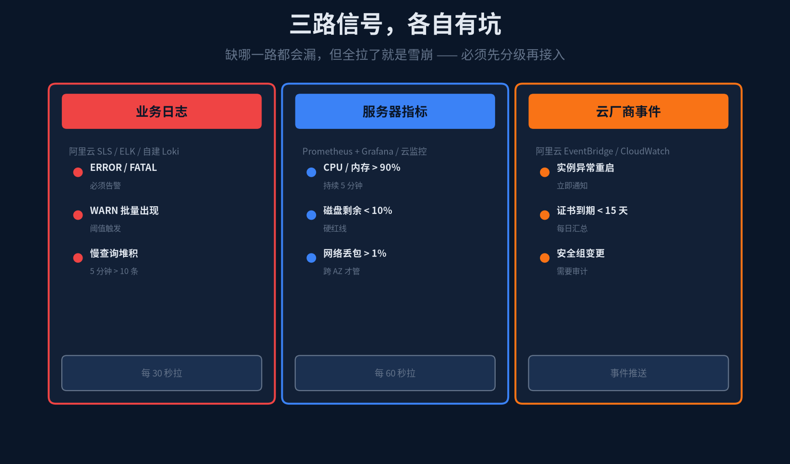
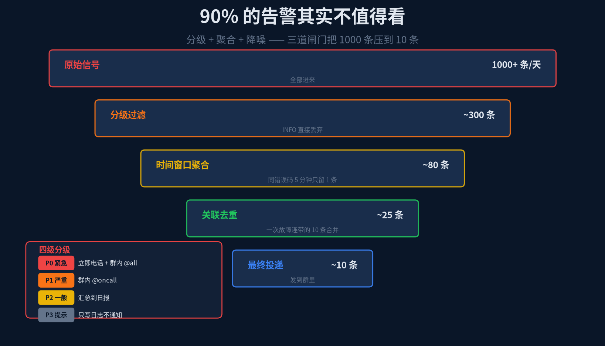
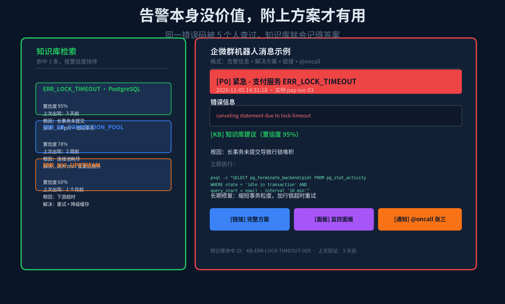

凌晨三点半，手机震了。
打开企微群，99+ 条未读。一半是 WARN 级别的慢查询，另一半是同一个错误码每隔两分钟重复一次。往上翻，发现核心错误只有一条：支付服务的 PostgreSQL 行锁超时。
但在那 99 条里面，它被淹没了。
凌晨三点的值班工程师，最珍贵的资源不是技术能力，是注意力。而淹没在噪音里的真正故障，是值班制度里最常见的事故来源。
告警的终点不是消息，是行动。
这篇聊的是把 Hermes 接到生产环境监控之后，怎么让告警从「消息轰炸」变成「可执行的行动清单」——附带根因、附带解法、附带链接，工程师拿到就能动。
1
先统一一件事：什么值得告，什么不值得
告警风暴不是因为信号太多，是因为没有分级。任何一条 ERROR 日志都直接 @all，结果所有人都被打扰，反而没人认真看。
我习惯把告警分成四级：
P0 紧急 核心功能完全不可用、数据丢失、安全事件。立即电话 + 群内 @all，5 分钟内必须响应。
P1 严重 核心功能降级、非核心完全不可用、性能明显下降。群内 @oncall，30 分钟内处理。
P2 一般 非核心功能降级、资源接近阈值、证书到期。汇总到日报，当日处理。
P3 提示 纯信息类、自动恢复的短暂抖动、需要长期观察的指标。只写日志，不通知。
这四级是整条链路的地基。后面所有的采集规则、聚合逻辑、投递策略，都围绕这四级展开。
定完级别，再决定要不要接。别一上来把 SLS 的所有 ERROR 都接上，那会制造灾难。正确的做法是先拉一个最小集，跑两周，再逐步扩展。

图 1 · 从信号到方案，四步过滤掉噪音、挂上知识库
2
采集：三路信号，各有各的坑
生产环境的信号源分三路，缺哪一路都会漏，但全拉了就是雪崩。必须先分级再接入。
业务日志 —— 阿里云 SLS、ELK、自建 Loki 都算这一类。
· ERROR 或 FATAL 级别、带堆栈的，必须告警。
· WARN 级别批量出现（5 分钟内超过 20 条），触发阈值告警。
· 慢查询堆积（5 分钟内超过 10 条执行时间 > 3 秒的 SQL），也要告。
日志采集是最容易踩坑的一路。很多团队直接按关键词过滤 ERROR，结果第三方依赖的超时、重试、预期内的降级，全被当成了真故障。规则里必须排除掉「预期内错误」，比如标记了 retry 的、有 fallback 的、只影响测试环境的。
服务器指标 —— Prometheus + Grafana、云监控都算这一路。
· CPU 或内存 > 90% 持续 5 分钟，触发 P1。
· 磁盘剩余 < 10%，这是硬红线，不管什么场景都要 P1。
· 网络丢包 > 1% 只在跨可用区时才管，单 AZ 内丢包大概率是抖动。
指标告警最容易犯的错是「阈值太低 + 没有持续时间要求」。CPU 瞬时跳 95% 就告，结果编译任务一跑就响。必须加持续时间：持续 5 分钟以上才告，这个参数对消除噪音极其重要。
云厂商事件 —— 阿里云 EventBridge、AWS CloudWatch Events。
· 实例异常重启，立即通知。
· SSL 证书到期 < 15 天，每日汇总一次。
· 安全组变更，需要审计，P2 即可。
事件推送是最干净的一路，因为云厂商只推真正的事件。但要注意 webhook 的签名验证，以及幂等——云厂商有时会重推，不能重复告警。

图 2 · 三路信号，各自有坑
3
三道闸门把 1000 条压到 10 条
原始信号每天上千条，真正值得看的只有个位数。中间要过三道闸门：分级过滤、时间窗口聚合、关联去重。
第一道最简单：按 P0–P3 过滤。P3 直接丢弃，不进后续流程。INFO 级别、自动恢复的短暂抖动、预期内错误，在这里就挡掉。
第二道是时间窗口聚合。同一个错误码，5 分钟内只留第一条。后面的重复事件归到「同类告警计数」里，不单独发。这样凌晨三点不会因为同一个故障在 5 分钟内触发 20 条告警。
第三道是关联去重。一次故障（比如支付服务挂了）会连带触发下游订单、对账、回调等 10 个系统的告警。Hermes 要能识别出这些告警有共同的根因（同一个 error code 或同一个 trace id 前缀），合并成一条主告警。
关联规则可以写死，也可以让 Hermes 自动学习。比如同一个时间窗口里、同一个 trace id 前缀、同一个依赖方向，这些都是典型的关联信号。
三道闸门过完，1000 条原始信号通常能压到 10 条以内。这 10 条才是真正值得通知的。

图 3 · 三道闸门把 1000 条压到 10 条
4
知识库检索：让告警带上解法
告警本身没有价值。工程师拿到一条「ERR_LOCK_TIMEOUT」，知道有问题，但不知道该怎么处理。
Hermes 要做的是把这条告警的关键词喂给企业知识库，看看之前有没有人遇到过、是怎么解决的。
检索 query 由三部分拼起来：错误码 + 服务名 + 关键词。比如「ERR_LOCK_TIMEOUT + 支付服务 + PostgreSQL 行锁」。这三个词一起搜，比单独搜错误码精确得多——因为同一个错误码可能出现在不同服务、不同数据库、根因完全不同。
知识库命中后，返回的不是一段长文，而是一个结构化的解法卡片：
· 根因 一句话说清为什么会发生
· 立即执行 一条或几条能直接复制执行的命令
· 长期修复 怎么防止下次再出
· 置信度 + 上次验证时间 告诉工程师这条解法靠不靠谱、多旧
知识库命中不到怎么办？别瞎编。置信度低于 60% 或者压根没命中，就只发告警信息不带方案。同时把这条告警作为「新案例」沉淀到知识库里，下次再出同样的问题就能命中了。
还有一个反哺机制：如果工程师解决了这次告警，Hermes 自动追问一句「要不要把解法写进知识库」。同意的话，直接生成一份结构化的知识条目。5 次之后，这个错误码就有一条经过真实验证的解法了。

图 4 · 告警卡片 = 告警信息 + 知识库解法 + 链接 + @oncall
5
投递：企微 / 飞书群机器人的消息格式
告警消息的格式决定了它能不能被快速消化。一条好的告警消息应该包含五个部分：
① 头部 告警级别 + 错误码 + 服务名。一眼看到「P0 紧急 · ERR_LOCK_TIMEOUT · 支付服务」就知道严重程度。
② 基本信息 时间、实例名、环境（prod/staging）。
③ 错误内容 取最关键的一行，别贴整段堆栈。堆栈点链接查看。
④ 知识库解法 根因 + 立即执行 + 长期修复，带置信度和上次验证时间。
⑤ 操作入口 完整方案链接、监控面板、@oncall 通知按钮。
企微 markdown 消息上限 4096 字节，消息一长就会被截断。解法内容超过 200 字就要折叠成链接。别硬塞，截断的告警比没发更糟糕。
投递的节奏也要控制：P0 → 立即电话 + 群内 @all，P1 → 群内 @oncall，P2 → 汇总到日报，P3 → 不通知。 这个策略别乱改，一旦 P1 也开始 @all，大家就开始屏蔽这个群了。
6
降级策略：不能全挂
整条链路有三个环节可能挂：采集网关、知识库检索、投递机器人。任何一个挂了，整条链路就断了。必须有降级策略。
网关挂了 → 走兜底 webhook。 云厂商的 webhook 直接推到群里，不经过 Hermes。缺点是没有知识库解法，但至少不会漏。
知识库查不到 → 只发告警不带方案。 置信度低于 60% 时，宁可只说「这里有问题」，也不说一句没把握的解法误导工程师。
全挂了 → 保留日志，事后回放。 Hermes 会把所有原始信号存 7 天。网关恢复后，重放过去 24 小时的信号，补做一次完整处理，确保没有遗漏。
还有一个容易忽略的点：告警抑制。同一个故障 30 分钟内只发一次「正在处理中」，处理完发「已恢复」。中间别反复发「还没好」，那会让值班工程师崩溃。
7
配置：三个 Agent + 一个 yaml
整条链路拆成三个 Agent，各自有明确的输入输出。
· collector 对接三路信号，产出原始告警事件
· normalizer 做分级 + 聚合 + 关联去重，产出「应该通知」的告警列表
· solver 查知识库，拼消息，投递到群
拆开的好处是每一步都能单独重跑，也方便各自加降级逻辑。
# ~/.hermes/config/alert-pipeline.yaml
collector:
sources:
- type: sls # 阿里云 SLS
query: "ERROR | FATAL"
interval: 30s
- type: prometheus # Prometheus / Grafana
rules: cpu>90%, mem>90%, disk<10%
duration: 5m
- type: eventbridge # 云事件推送
verify_signature: true
normalizer:
levels: [P0, P1, P2, P3]
dedupe_window: 5m # 同错误码 5 分钟只留 1 条
suppress_after: 30m # 处理中告警不再重复通知
solver:
knowledge_source: enterprise_memory
query_template: "{error_code} + {service} + {keywords}"
min_confidence: 0.6 # 低于 60% 不带方案
deliver:
wecom_webhook: "${WECOM_WEBHOOK_ALERT}"
feishu_webhook: "${FEISHU_WEBHOOK_ALERT}"
target_groups: [ops-oncall, core-services]
上线节奏别一步到位，分三步走。
第一步：shadow mode。采集 + 归一 + 知识库全跑，但不投递。每天晚上把当天的告警处理结果（原始 vs 归一后 vs 知识库命中情况）做成报表，找 oncall 团队 review。
第二步：只读投递。只投 P0，带知识库解法，但不在消息里加 @all 或 @oncall。让大家先适应「告警带解法」的格式。
第三步：全量上线。P0/P1/P2 全按策略投递，同时开启「解法反哺」机制。
8
边界：别让 AI 替你拍板
五条边界，写在这里省得以后再踩。
知识库解法不是自动修复。它是「建议」。工程师看到后自己判断能不能执行、有没有副作用。自动修复是另一个话题，复杂度高一个数量级。
置信度必须暴露。AI 说「我有 95% 把握」和「我觉得大概是这个原因」，工程师的处理优先级完全不同。别把这个信息藏起来。
Webhook 签名必须验。这条是安全红线。不验签名的 webhook 等于任何人都能伪造告警发到你的群里。
采集规则要版本化。每一条告警规则的增删改，都要有记录、能回滚。不然两个月后没人知道那条莫名其妙的规则是谁加的。
别让 P2/P3 也发群。一旦所有级别的告警都往群里发，三天内这个群就会被屏蔽。P2 汇总到日报，P3 只写日志。
最后回到开头那个凌晨三点半的场景。
如果有了这套东西，工程师的手机只会收到一条：「[P0] 紧急 · 支付服务 ERR_LOCK_TIMEOUT」，下面跟着根因、立即执行的命令、长期修复的建议。
他看一眼，知道该 kill 掉 idle-in-transaction 的长事务，复制执行，问题解决。然后回一句「搞定了，根因确认，解法已入库」。
耗时从翻 99 条消息变成 2 分钟。
这就是自动化监控真正的价值——不是替你看更多指标，是让你在关键时刻能秒出决策。
而知识库让每一次解决，都变成下一次更快的基础。